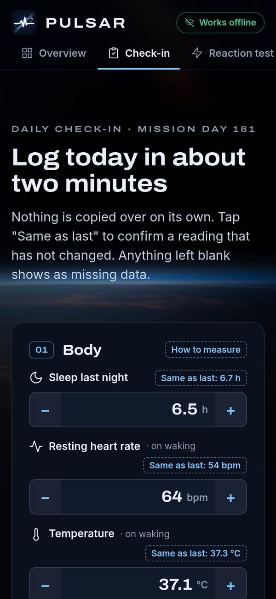
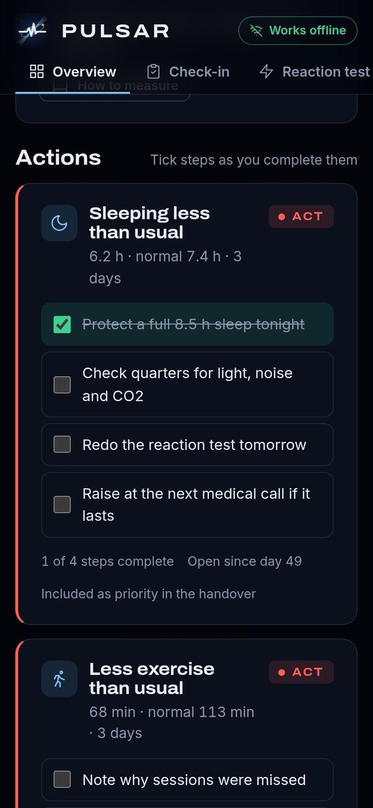
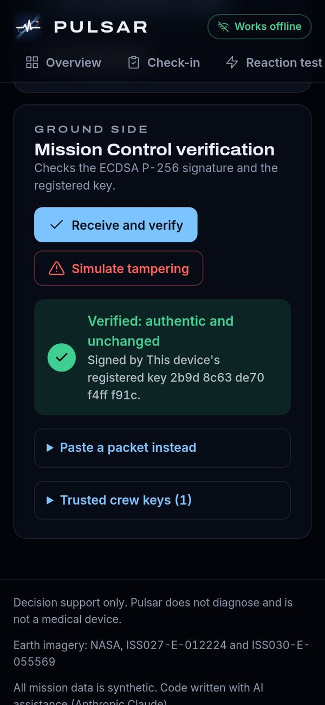
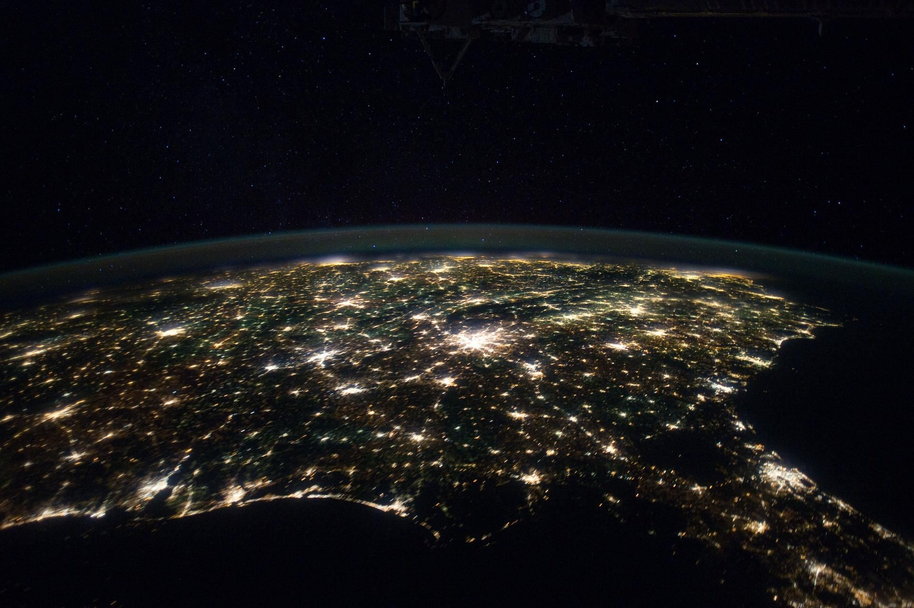

NASA Space Apps Challenge 2026 · Sydney
PULSAR
Health checks that don't wait for Earth.
It learns each astronaut's normal, spots drift early and says what to do next. No signal needed.
- Works offline
- No account
- Signed handovers
How it works
Two minutes a day.




Why it matters
Mars is up to 22 minutes away. Each way.
- Space station< 1 s
- The Moon1.3 s
- Mars3–22 min
One-way radio delay. The crew has to act first.
Tested before flight
Tested on 50 missions.
100%of events caught
1.0 dayfrom onset to first flag
0.36false alarms per 30 days
Simulated 180-day missions, as no public day-by-day astronaut data exists. Rerun it in the app.
Demo
See it in 30 seconds.
Blackout, alert, checklist, signed handover.